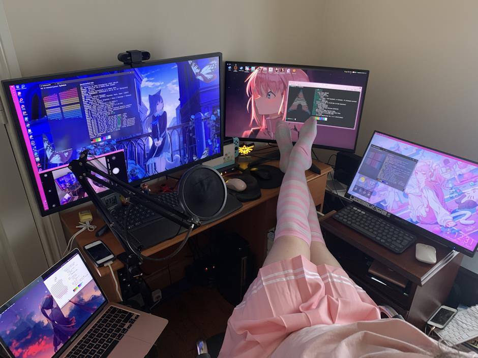

meow :3
soo.. my skirt arrived today and i had the house to myself for a little bit, so i decided to wear my cutest linux attire~ >w<
i also posted this image on the Blahaj.zone lemmy but seemingly managed to break the site on my first post, the preview is broken >.<